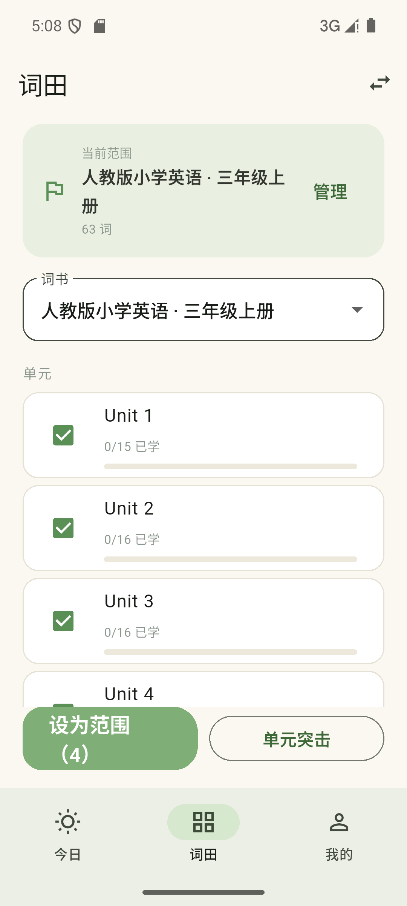
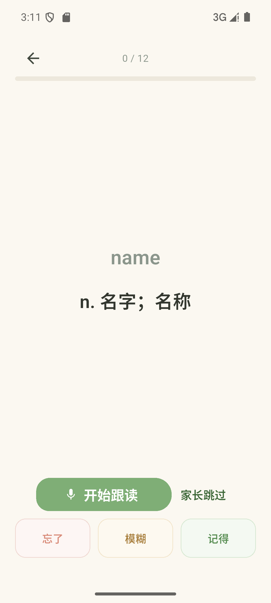

4694唯一词条
22教材 / 考纲
100%本地音频
0账号与上传
每天一点
不追求一次背很多
每天 12 个新词，先把当天该浇的词复习完。种下去、浇下去，剩下的交给间隔重复。
种
今日队列
新词 + 到期复习自动排好，学完打卡，连续天数看得见。
浇
FSRS 复习
忘了、模糊、记得三档评分，按记忆曲线安排下次出现。
田
按册选范围
小学、初中、高中、中考、高考，选到单元，也能单元突击。
听
本地发音
每个词都有离线音频，不依赖手机语音引擎，也不联网。
读
跟读回放
新词要求录一遍、回放一遍才可评分，家长可 PIN 跳过。
家
家长模式
多孩子档案、每日新词、备份恢复；学生端只读。
界面
纸白、苗绿、手绘圆角
没有排行榜、没有积分商城。孩子看到的是今天要种的词，和一块慢慢长起来的田。
今日：12 个新词

词田：按册、按单元选范围
跟读：录音后自动回放为什么做
一个爸爸的私心
市面上的背词 App 大多要账号、要联网、要内购。这个项目只想解决一件事：让孩子每天打开就能学，学完就关，数据留在家里。
- 不注册、不登录、不上传
- 不联网也能完整使用
- 词库与音频随安装包带走
- 备份文件可导出，换机可恢复
- 学生端不能改设置，家长 PIN 管理